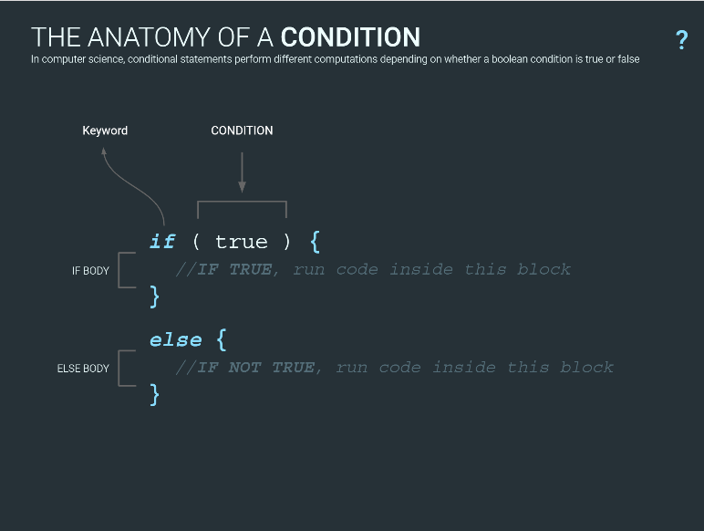

What is a JavaScript Conditional statement "if else and else if" ?
Conditional statements are used to perform different actions based on different conditions.
Links to internet and Tutorials
If you want to learn moreAn example of simple condition
// A SIMPLE CONDITION
let num = 5;
if (num > 10) {
console.log("True!!");
}
else {
console.log("FALSE!");
}
There are different type of operators
Comparisons operators :
>= greater or equal to
<= less or equal to
== equal to
=== equal to and the same type
!= NOT equal to
!== NOT equal to and not the same type
Other examples of conditions more complicated
// A STRICT EQUALITY CHECK CONDITION
let num = 5;
let num2 = 20;
if (num === 5){
console.log("true");
}
else {
console.log("false");
}
// A DOUBLE CHECK WITH "OR" (logical operator)
// One condition must be true
if (num > 5 || num < 30 ) {
console.log("TRUE");
}
// A DOUBLE CHECK WITH "AND" (logical operator)
// BOTh condictions must be true
if ( num > 5 && num2 <30){
console.log("double check AND", "TRUE");
}
//USING NOT OPERATOR
if (num != 5) {
console.log("FALSE");
}
// COMPLEX CHECKS
if ( (num === 5 && num > 5) || (num2 == 20 || num2 > 20) ){
console.log("complex cond : TRUE!");
}
Other examples of conditions
/*Is the Number Even or Odd?
--------------------------------------------------*/
// Create a function that takes a number as an argument
// and returns "even" for even numbers and "odd" for odd numbers.
function isEvenOrOdd(num2)
{
remainder = 0;
remainder = num2 % 2;
if (num2 !== parseInt(num2))
{console.log("data is not an integer");}
else {
if (remainder == 0 ){
console.log("isEvenOrOdd", "even" );}
else {
console.log("isEvenOrOdd", "odd" );
}
}
}
isEvenOrOdd(3.2) // ➞ "not an integer"
isEvenOrOdd(141) // ➞ "even"
isEvenOrOdd(146) // ➞ "even"
isEvenOrOdd(19) // ➞ "odd"
The Ternary Operator
/*THE TERNARY OPERATOR
-----------------------*/
let num5 = 25;
if (num5 >= 25) {
output = "TRUE";
}
else {
output = "FALSE";
}
show(output);
//CONDITION IF TRUE IF FALSE
output = (num5 >= 25) ? "TRUE" : "FALSE";
show(output);
// another way
output = num5 >=25;
if(output) {
show("Yes is true!");
}
Other examples of conditions
/*THE TERNARY OPERATOR
-----------------------*/
// Using the ternary operator create a condition who checks if today is Tuesday
let date = new Date();
day = date.getDay();
show(day);
//CONDITION IF TRUE IF FALSE
output = (day == 2) ? "Tuesday" : "Not Tuesday";
show(output);
/* Equality of 3 Values
----------------------------- */
// Create a function that takes three integer arguments (a, b, c) and returns the
//amount of integers which are of equal value.
function equal(int1, int2, int3 ){
let count = 0;
let output = "";
if (int1 == int2 ){
count = count + 1;
}
if (int1 == int3 ){
count = count + 1;
}
if (int2 == int3 ){
count = count + 1;
}
output = "They are " + count + " elements of equal value";
console.log(output);
}
equal(3, 4, 3) // ➞ 2
equal(1, 1, 1) // ➞ 3
equal(3, 4, 1) // ➞ 0
/* Strictly Increasing or Decreasing
----------------------------------------*/
//Create a function that takes an array and determines whether it's strictly
//increasing, strictly decreasing, or neither.
function check(arr){
let output = "";
for (let i=0; i<= length ; i++){
if ( (arr[i] < arr [i+1]) && (arr[i+1] < arr[i+2])){
output = "increasing";
}
else if ( (arr[i] > arr [i+1]) && (arr[i+1] > arr[i+2])){
output = "decreasing";
}
else output = "neither"
}
console.log("The array [" + arr + "] is " + output);
}
check([1, 2, 3]) // ➞ "increasing"
check([3, 2, 1]) // ➞ "decreasing"
check([1, 2, 1]) // ➞ "neither"
check([1, 1, 2]) // ➞ "neither"
/* Loops : counting persons by Gender
---------------------------------------*/
// Create an array containing 6 persons, girls and boys.
// Each person should have 2 keys, name and gender.
//Loop into the array and check how many girls and boys do you have.
//The output should // be something like : "My list contains 2 girls and 4 boys"
let person = [
{
name : "Penelope",
gender : "female"
},
{
name : "Teresa",
gender : "female"
},
{
name : "Rocky",
gender : "male"
},
{
name : "Mireille",
gender : "female"
},
{
name : "Mehdy",
gender : "male"
},
];
function NumGender (){
let numM = 0; // number of Boys
let numF = 0; // number of girls
let output = "";
let length = person.length;
for (let i=0; i < length; i++){
console.log(person[i].gender);
if (person[i].gender == "male" ){
numM = numM + 1;
}
else if (person[i].gender == "female" ){
numF = numF + 1;
}
}
output = "My list contains " + numF + " girls and "+ numM + " boys";
console.log(output);
}
//call of the function
NumGender();